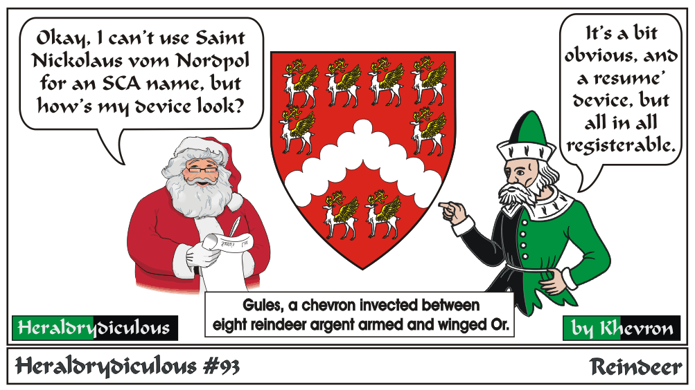

Previous Next
Resume' arms are to be discouraged. Why register 'what you do' when what you do will likely change over the years? It's just not good period heraldic style for individuals.
Heraldrydiculous Home
e-mail:
Back to Khevron's Heraldry Page